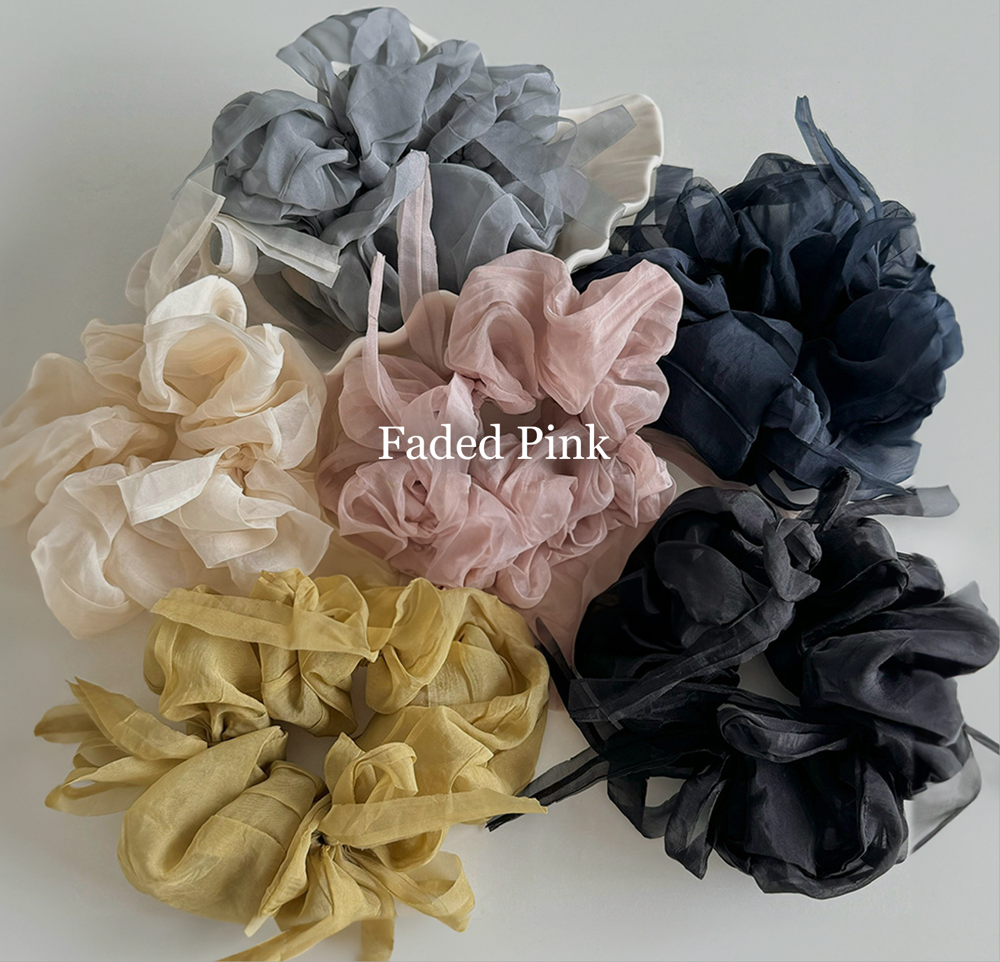
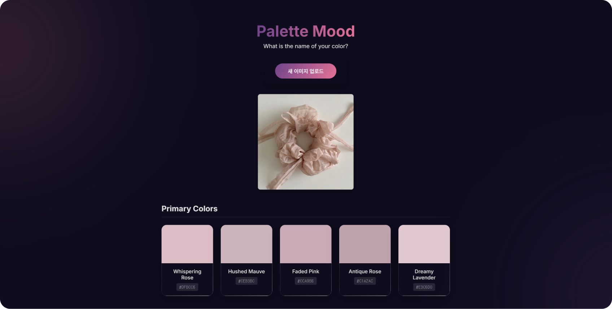
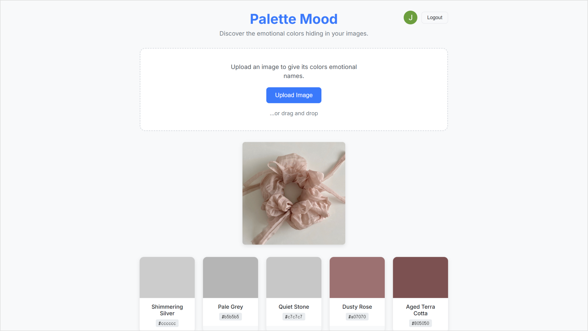
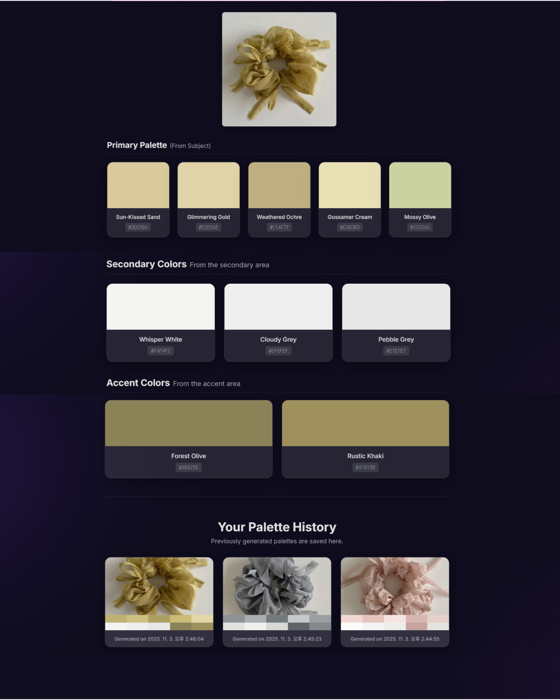
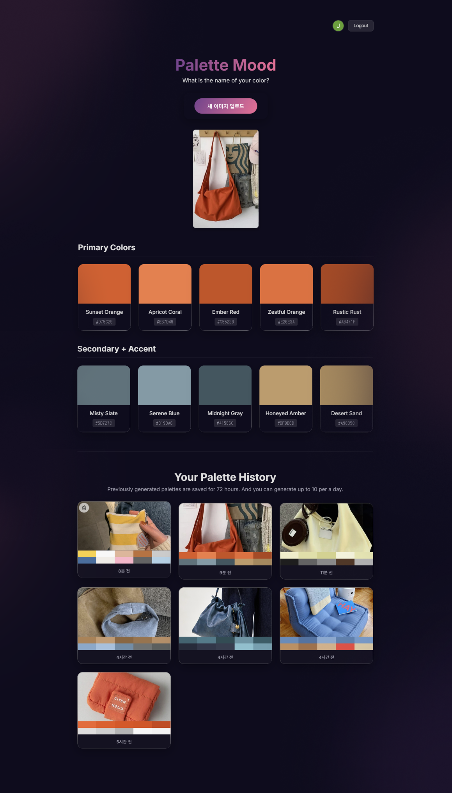
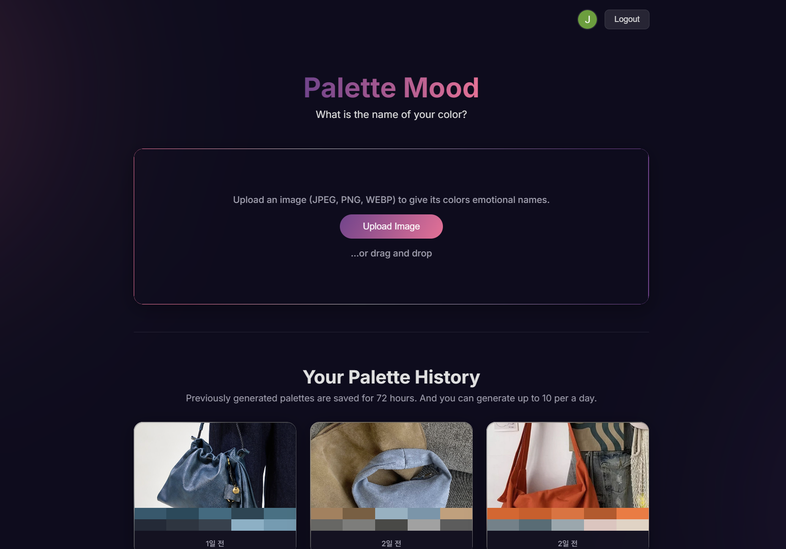
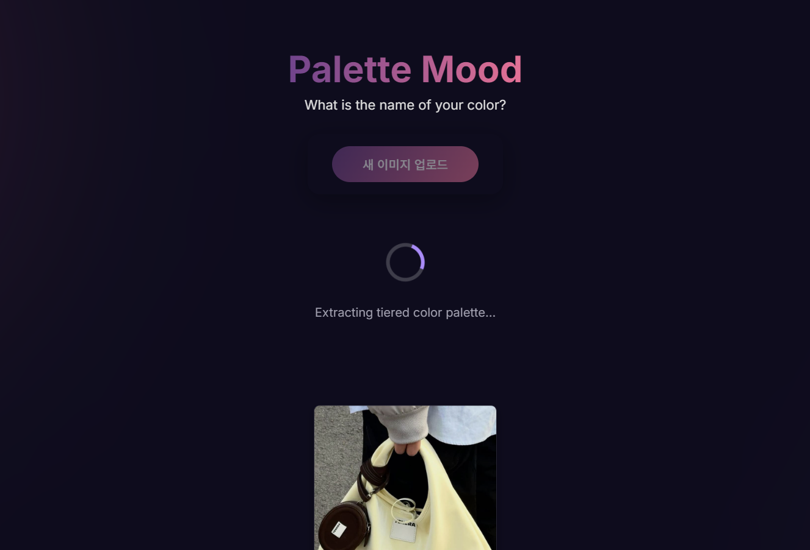
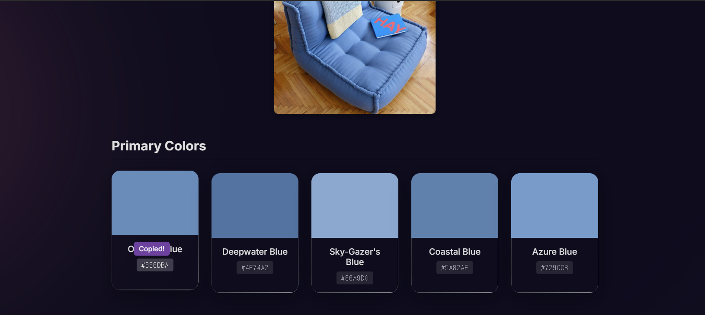

Palette Mood
Palette Mood started from a simple question: what if colors had names that matched the mood they carry? Instead of “Pink,” it might use “Faded Pink” to convey a mood or story.

Palette Mood is a personal project created using Google AI Studio.
This idea was conceived with individuals and businesses in mind—such as fashion brands, artists, and designers—who want to convey color through emotion and atmosphere. Palette Mood translates the colors of an image into the language of emotion, including everything from fashion items like clothing and accessories to the atmosphere of furniture and interior design.
My goal is to help color transcend its role as a simple visual element, enabling it to become a medium that truly communicates a brand’s feeling and atmosphere.

Google AI Studio, Gemini, Firebase, Google Cloud Console, Cursor, Visual Studio Code, GitHub, Vercel
The Product Requirements Document (PRD) was written using Gemini, and the content was directly built into Google AI Studio.
The core function—uploading an image and assigning an emotional name combined with an adjective and a noun (e.g., ‘Faded Pink’)—has been prototyped.

The number of results was set to 10, with colors categorized into dominant (5), secondary (3), and minor (2) based on area. The Gemini model was fine-tuned to improve the quality of generated color names.
A login feature was implemented using Firebase and Google Cloud Console, enabling Google Sign-In and saving users’ extracted color history.

The visual design was refined. I started the design through prompting with Cursor, applying design elements like Dark Theme and Glassmorphism.
A history policy was added. This policy was set to store records for a maximum of 3 days (72 hours) and limit extractions to 10 per user per day.
Final Outcome
Detailed color codes, as well as specific border, padding, margin, and icons were fine-tuned using Visual Studio Code. The project was pushed to GitHub and finally deployed via Vercel.




Insights
- Describing designs through prompts pushed me to think more concretely about UX — clarifying intentions I might have otherwise left vague.
- Sharing your intent, purpose, and context upfront leads to more accurate and relevant results from the AI.
- Drafts come together quickly and the overall concept feels satisfying, but fine-tuning the details still requires manual work — and some basic knowledge of code and developer terminology.
- Working with AI made me realize how much my developer colleagues had quietly handled behind the scenes — things I never even noticed until I had to do them myself.